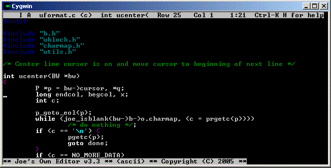
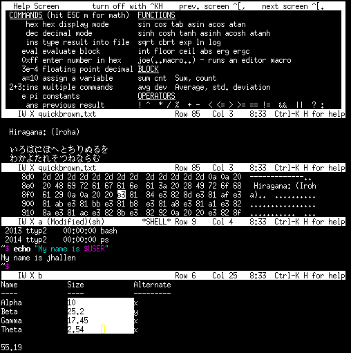

JOE is a full featured terminal-based screen editor which is distributed
under the GNU General Public License (GPL). JOE has been around since 1988
and comes standard with many Linux distributions.
JOE is being maintained by its original author Joseph Allen, plus all of
the people who send bug reports, feature suggestions and patches to the
project web site. JOE is hosted by SourceForge.net and its source code is
controlled under Mercurial.
JOE is a blending of MicroPro's venerable microcomputer word processor
WordStar and Richard Stallman's famous LISP based text editor GNU-EMACS (but
it does not use code from either program): most of the basic editing keys
are the same as in WordStar as is the overall feel of the editor. JOE also
has some of the key bindings and many of the powerful features of EMACS.
JOE is written in C and its only dependency is libc. This makes JOE very
easy to build (just "configure" and "make install"), making it feasible to
include on small systems and recovery disks. The compiled binary is about
300K in x86. Note that JOE can use either the termcap or terminfo terminal
capabilities databases (or a built-in termcap entry for ANSI terminals). The
choice is controlled by a "configure" option. If terminfo is used, a
library is required to access the database (on some systems this library is
ncurses, but JOE does not use curses to control the terminal- it has its own
code for this).
Much of the look and feel of JOE is determined by its simple
configuration file "joerc". Several variants of the editor are installed by
default in addition to "joe": "jmacs" (emulate GNU-EMACS), "jstar" emulate
WordStar, "jpico" emulate the Pine mailer editor PICO and "rjoe"- a
restricted version of JOE which allows the used to only edit the file given
on the command line. JOE is linked to several names. The name which is
used to invoke the editor with "rc" tacked on the end gives the name of
configuration file to use. It is thus easy for you to make your own variant
if you want. Also you can customize the editor by copying the system
"joerc" file to your home directory.
Here is a basic screen shot of JOE running in a Cygwin console:

Here is a screen shot showing several windows- the first has some example
double-wide characters, the second is the same buffer as the first, but in
hex-dump view mode, the third is a shell window and the fourth shows a
selected rectangular block of numbers and their sum:

JOE has the following features:
- Multi-file search and replace- file list is either given on command line
or by a UNIX command (grep/find) run from within JOE.
- Mouse support, including wheel (works best when using xterm). The mouse
can resize windows, scroll windows, select and paste text, and select menu
entries.
- Context display on status line: allows you to see name of function
cursor is in.
- UTF-8 support, optional auto-detect of UTF-8 files.
- Syntax highlighting for more than 40 languages.
- Hexadecimal edit mode. Use JOE as a disk editor: joe -overwrite -hex
/dev/hda1,0,512 (edit first sector of /dev/hda1).
- Non-destructive editing of binary files even when handling MS-DOS or
UNIX line endings.
- Swap file allows editing files larger than memory.
- Context sensitive on-line help.
- Bash-like TAB completion and history for all prompts, or jump into the
completion menu and use it to traverse the file system.
- Complete word in edit buffer by hitting ESC Enter (uses other words in
buffer for dictionary).
- EMACS-compatible file locks and file modification checking.
- Shell windows.
- Multiple-windows onto same or different files.
- Compile and step through errors or Grep and step through finds.
- Goto matching character delimiter ( [ { < which skips comments and
quoted matter.
- Goto matching word delimiter, including XML tags and C preprocessor
directives.
- Ctrl-arrow key block selection.
- Search and replace system, including regular expression and optional
incremental search. Regular expression key for matching balanced C
expressions.
- Tags file search (tab completion at tags search prompt uses tags file as
database).
- Spell check commands which invoke aspell or ispell. Language for aspell
can be passed through editor.
- Paragraph format which preserves news/mail quoting indentation
characters.
- Unlimited Undo and Redo.
- Yank buffer allows stepping through and insertion of previously deleted
text.
- State file restores history buffers, yank buffer and last file cursor
positions.
- Cursor position history allows you to step through previously visited areas
of a file.
- Multiple interactive keyboard macros. Macros can be assigned to key
sequences in joerc file.
- Block move/copy/delete/filter.
- Rectangle (columnar) block mode- search and replace can be narrowed to
the rectangular block. Rectangular blocks can be filtered through UNIX
commands.
- Overtype/Insert modes.
- Indent/Unindent (shift block left or right).
- Auto-indent mode.
- Picture mode for ASCII graphics.
- Line number mode displays line number of each line.
- Powerful scientific calculator with block statistics functions
(sum/standard-deviation/count highlighted block of numbers).
- Termcap/Terminfo support allows JOE to use any terminal or terminal
emulator.
- Can accept data from a pipe, for example: ls | joe
JOE does not have these features (yet):
- Vertical windows
- Folding
- Right to left editing for Hebrew and Arabic
- Direct editing of 16-bit character sets such as UCS-16 and BIG5
- All encompassing macro language like elisp in GNU-EMACS
- Background spell checking, like Microsoft WORD
- Highlight all matching words
- Automatic unzip/untar
- Built-in FTP
- X-Window version (use inside a terminal emulator)
- Native Windows version (but you can use JOE in Cygwin)
- Interface to debugger
Here are some other editors to consider:
http://www.gnu.org/software/emacs
Richard Stallman's powerful LISP-based editor.
http://www.jedsoft.org/jed John E.
Davis' version of EMACS using the S-Lang language.
http://www.jasspa.com Micro Emacs
http://www.vile.cx Paul Fox's vi clone
(built on top of Micro Emacs). Now maintained by Tom Dickey and others.
http://www.nano-editor.org An open
source PICO clone.
http://www.washington.edu.pine/faq/whatis.html
PICO: A simple editor built on Micro Emacs.
http://www.vim.org Bram Moolenaar's vi
clone
http://elvis.the-little-red-haired-girl.org Elvis: A
small vi clone
http://www.jedit.org Powerful editor
written in Java
http://www.nedit.org X-Windowing System
editor
http://www.ibiblio.org/mc Midnight
Commander file manager with built-in text editor with highlighting. Can
browse ZIP and TAR files.
http://www.cs.yorku.ca/~oz/wily A
UNIX/X clone of Rob Pike's Plan9 editor ACME. Originally written by Gary
Capell, but now maintained by Ozan Yigit. This is an interesting minimalist
IDE.
http://www.eclipse.org/downloads
Huge IDE written in Java. Performs same function as Wily, but is literally
1300 times larger.
ftp://netlib.bell-labs.com/netlib/research/sam.shar.gz
UNIX/X port of Rob Pike's Plan9 editor SAM. This interesting editor
supports multi-file regular expression search & replace with unlimited
undo.
http://sed.sourceforge.net
UNIX Stream EDitor. If you're on UNIX, you already have this editor, but follow
this link to see the amazing things that can be done with it.